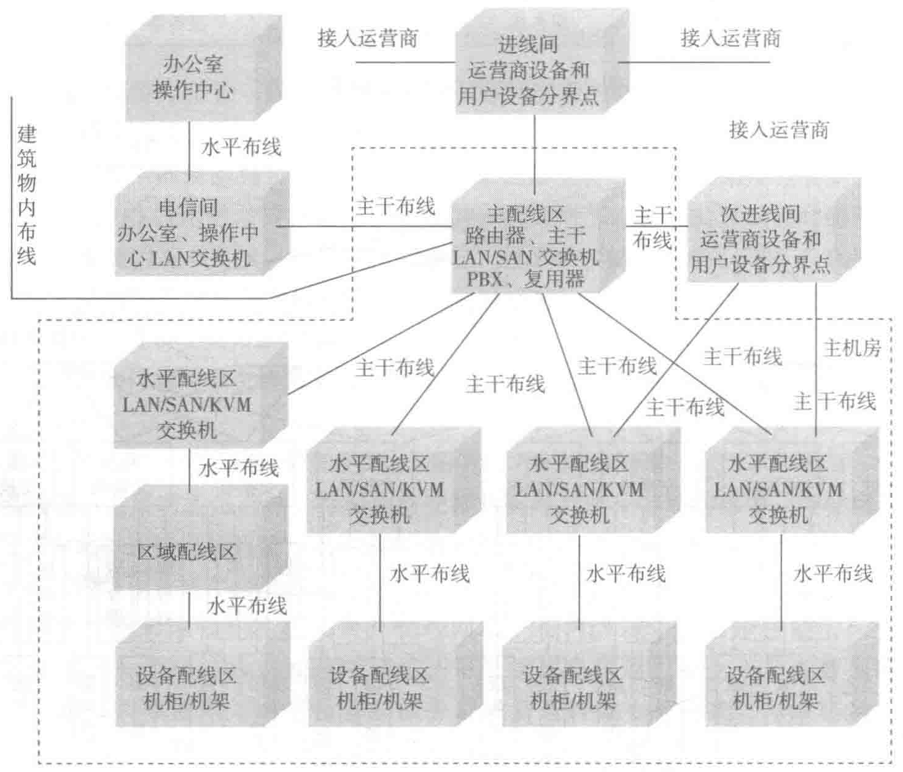

7.3 布线系统的构成
综合布线系统是建筑物内或建筑群之间的一个模块化、灵活性极高的信息传输通道，是智能建筑的“信息高速公路”。布线系统是搭建数据中心的基础设施之一，是计算机网络的物理承载平台。通过结构化、高密度、高带宽、高可靠性的布线系统，保证网络的数据传输、系统高可用性和安全性。因此数据中心布线系统与网络系统架构密切相关，数据中心布线系统应根据网络架构进行设计。
7.3.1 数据中心的布线空间
布线空间用于放置通信线缆和设备。典型的数据中心布线空间包括接入间、主配线区 MDA，中间配线区 IDA（可选），水平配线区 HDA，区域配线区 ZDA 和设备配线区 EDA。
除了 MDA 和 EDA 外，并不是所有的布线空间都是必需的。这些布线空间的大小取决于数据中心网络的规划和需求。
数据中心布线空间的构成如图 7-8 所示。
